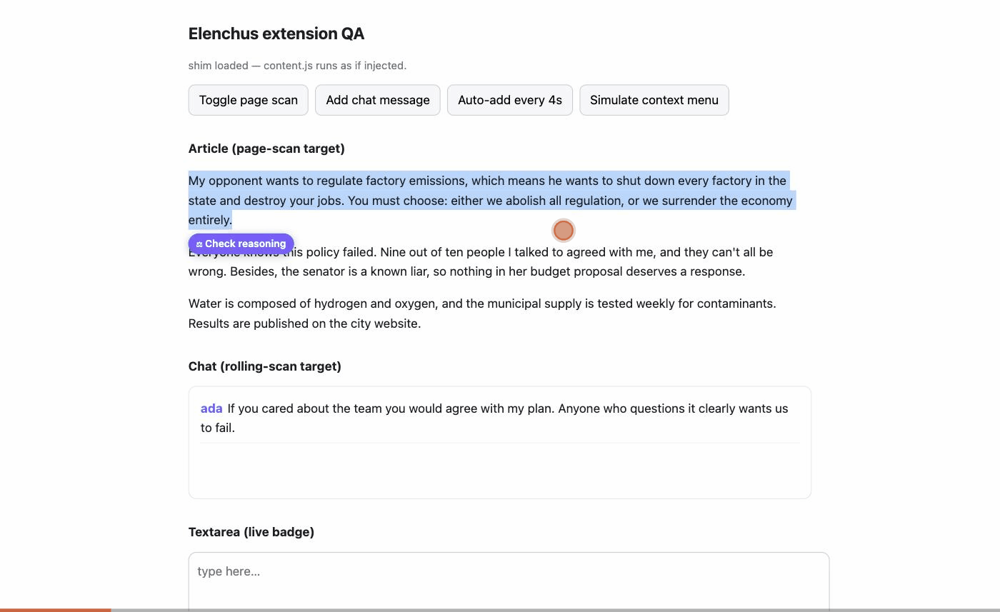
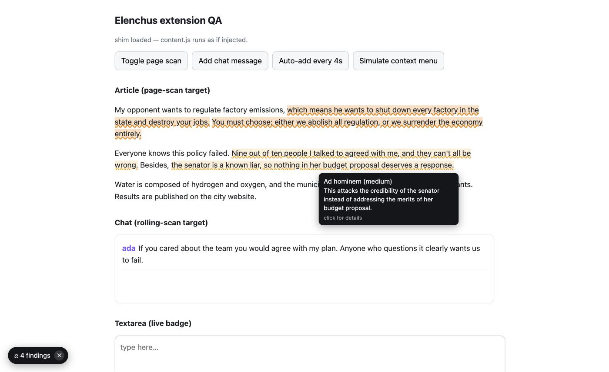
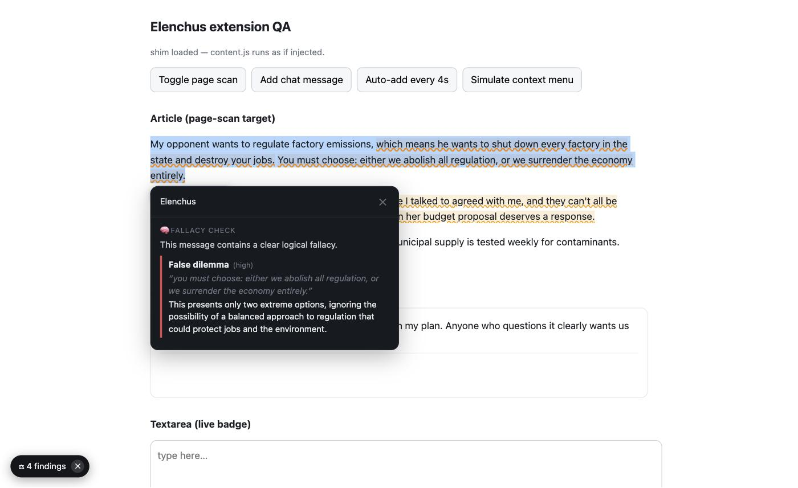
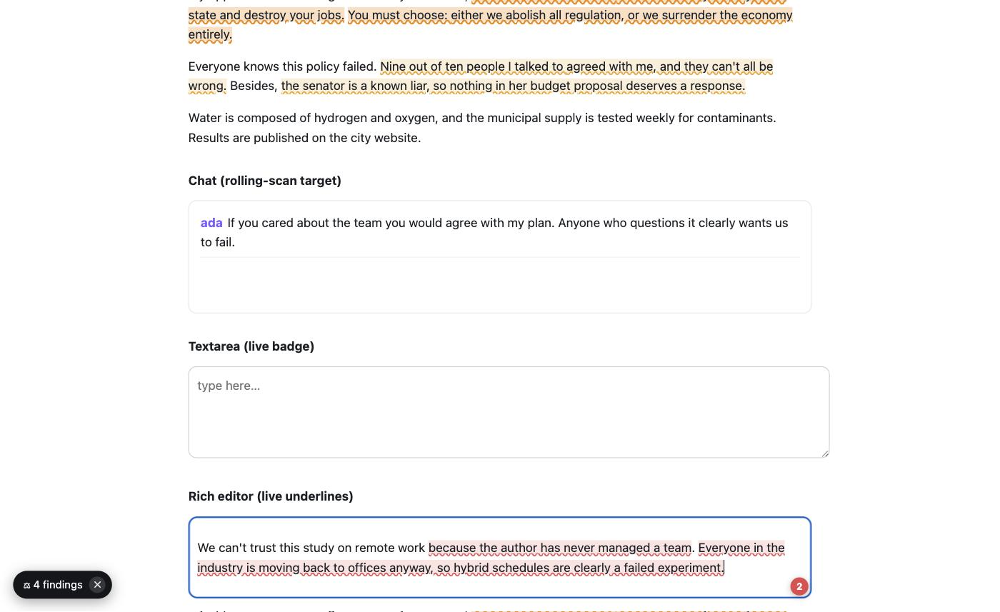

Socratic scrutiny for arguments, anywhere you read or write: detect logical fallacies, bad-faith rhetoric, bias, and manipulation — with any LLM, under your own API key.
Each check is a set of individually toggleable techniques, defined in data files — adding one requires no code. Sensitivity (lenient / balanced / strict) tunes how eagerly they fire.
25 techniques — ad hominem, strawman, false dilemma, bandwagon, motte-and-bailey, and friends.
14 techniques — gish gallop, sealioning, whataboutism, loaded questions, tone policing.
10 techniques — spin, euphemism, weasel words, false balance, cherry-picked framing.
8 techniques — fake urgency, authority impersonation, advance-fee patterns, guilt hooks.
Core install is dependency-light; providers are extras. A stub mode works with no API key at all.
# try it with zero setup (canned output, no key) pip install elenchus LLM_PROVIDER=stub elenchus analyze "Everyone knows this is true." # point it at a real model pip install "elenchus[anthropic]" # or [openai] — also covers Google export ANTHROPIC_API_KEY=sk-ant-... elenchus analyze "My opponent is a liar, so his plan fails." --check all # configure visually, or serve the browser extension elenchus web # visual config builder → elenchus.yaml elenchus serve # localhost API for the Chrome extension
A personal Chrome extension (chrome-extension/, load unpacked) turns Elenchus
into a reading and writing companion. Everything stays on your machine — the extension talks only to
elenchus serve on localhost, which refuses requests from web-page origins.




One resolved config (file, env, or the visual builder) drives every frontend.
elenchus analyze "…" --check rhetoric --json, pipes welcomeelenchus mcp exposes analyze / list_checks to Claude Desktop, Claude Code, IDEselenchus serve for the browser extension and your own toolselenchus web renders the same elenchus.yaml the CLI writes